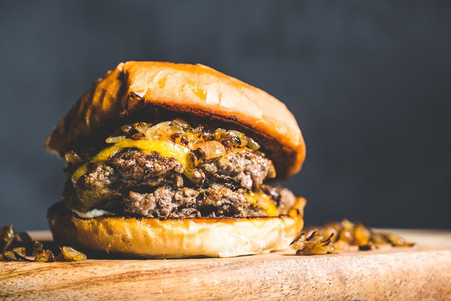

Cheeseburger

Description
Just your ordinary cheeseburger! You can't go wrong with it!
If you're looking for comfort food or just something quick and
simple, then look no further! Made with a juicy 1/2 pound angus
beef patty and topped with your choice of cheese, lettuce, tomatoes
etc.
Ingredients
- 2 Lbs 80/20 Ground Beef Chuck
- Salt
- Black Pepper
- Onion Powder
- Garlic Powder
Directions
- Preheat skillet on medium-high heat
- Add olive oil to skillet
- Combine ground beef into a bowl
- Season the mixture as desired
- Grab medium sized portions and roll into a ball
- Flatten the ball with both hands into a hamburger patty shape
- Place patty in warm skillet and cook until done
- When almost done, add cheese ontop of patty while in skillet
- When cheese is melted, remove patty